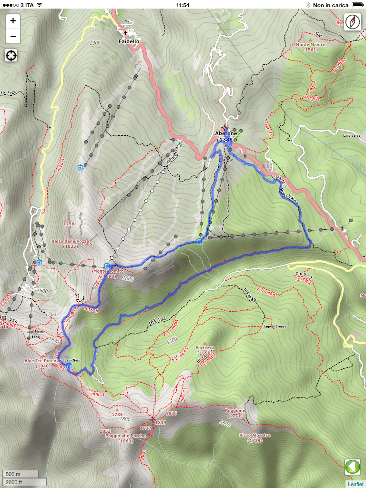

Istruzioni

Questa applicazione contiene la cartografia tematica ad uso escursionistico di un'area di circa 25x25 Km. Visto che in montagna il servizio di copertura Internet su telefoni cellulari non e' garantito (o comunque lento) tali dati sono inglobati all'interno dell'applicazione e sempre disponibili.(NB: la cartografia al massimo dettaglio e' disponibile tra Pracchia ed Abetone. Il percorso n.23 risulta coperto ma un dettaglio di informazioni inferiore
Con i normali gesti su smartphone/tablet si puo'spostare la mappa visualizzata o zoomare per maggiori dettagli anche al di fuori del sentiero che state percorrendo in modo da poter avere informazioni sulle vette che vi circondano o sulle prossime difficolta' del percorso.
Per tornare a visualizzare la scheda del sentiero si puo' cliccare l'icona verde della freccia bianca a sinistra
 . Su Android si puo' usare anche il tasto Back del menu' in basso all schermo
. Su Android si puo' usare anche il tasto Back del menu' in basso all schermoAbilitando il posizionamento GPS del proprio telefono/tablet prima dell'avvio dell'applicazione e' possbile centrare la mappa sulla vostra posizione attuale effettuando anche una traccia degli spostamenti.
Per ottenere cio' basta premere il pulsante
 ed attendere che l'immagine cambia mostrando un punto rosso al centro .La posizione sara' visualizzata quando mediante punto rosso sulla mappa
ed attendere che l'immagine cambia mostrando un punto rosso al centro .La posizione sara' visualizzata quando mediante punto rosso sulla mappaNell'angolo in basso a destra si trovera' il riferimento della barra della scala delle distanze in miglia e chilometri